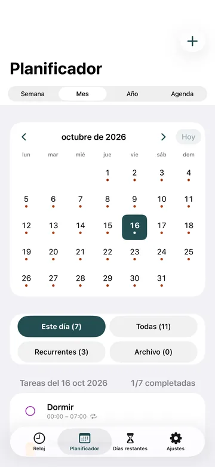

Para estudiantes
Clases, estudio y sueño en una sola esfera
El horario te dice dónde tienes que estar. Visdap te muestra todo el día a su alrededor: clases, horas de estudio, descanso y sueño en una esfera de 24 horas, para que veas cuándo aún queda tiempo para repasar.

- Sin cuenta
- Sin anuncios ni rastreo
- Funciona sin conexión

Lo que ayuda durante el semestre
Todo el día, no solo las clases
Clases, estudio, trabajo y sueño en un mismo círculo. Los huecos libres se ven enseguida, y sabes si trasnochar te quitará horas de sueño.
Prioridades S/A/B/C y listas de comprobación
Marca lo más importante, desde un examen hasta una lectura. Divide una tarea grande en puntos de una lista y márcalos uno a uno.
Calendario mensual y anual
Ves de un vistazo las semanas antes de un examen y organizas tus días de estudio en torno a ellas. La planificación en cualquier fecha y las tareas recurrentes para clases fijas vienen con Pro.
Recordatorios en el móvil y en la muñeca
Los recordatorios con sonido y posponer suenan a tiempo. Un reloj Wear OS muestra las tareas del día desde tu móvil Android, y en Windows la esfera se queda en el escritorio mientras estudias.
Preguntas frecuentes
¿Hay una versión gratuita para estudiantes?
Sí. La versión gratuita incluye la esfera de 24 horas, recordatorios y widgets con 2 tareas al día. Pro, una suscripción mensual o anual, añade tareas ilimitadas, tareas recurrentes y planificación en cualquier fecha; el precio aparece en tu tienda.
¿Puedo ver mi horario de clases desde mi calendario?
En Android, Visdap puede mostrar los eventos de tu calendario junto a tus tareas, solo lectura, y nunca los cambia. En Windows, añade tus clases como tareas.
¿Funciona sin internet?
Sí. La planificación y los recordatorios funcionan sin conexión, así que un wifi débil en el campus no es problema. Solo comprar o restaurar Pro necesita conexión con tu tienda.
Planifica hoy. Velo todo.
Instala Visdap y planifica tu primer día en un par de minutos. Empieza gratis.